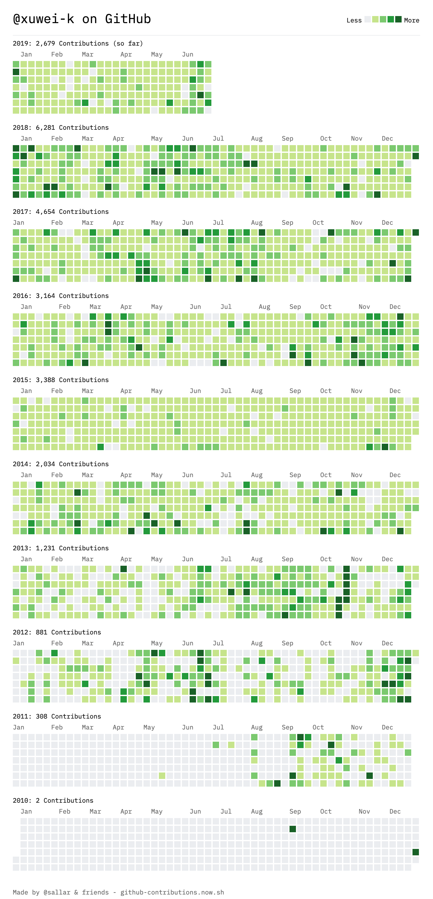
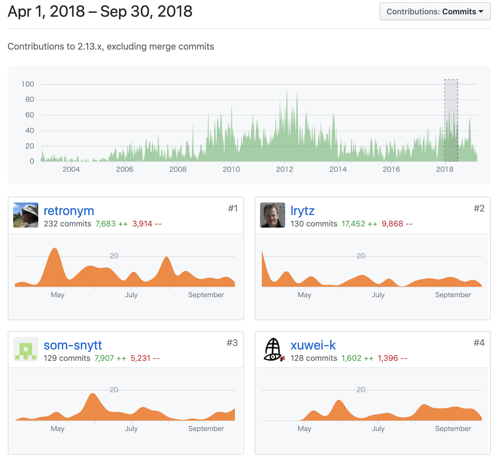
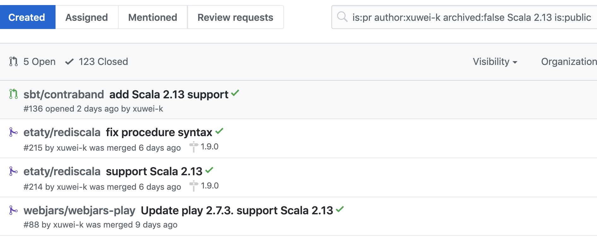

<DOCTYPE html>
<html>
  <head>
    <title>ScalaのOSSに貢献しよう ~ Phil Bagwell Award記念講演</title>
    <meta http-equiv="Content-Type" content="text/html; charset=UTF-8"/>
<script async src="https://platform.twitter.com/widgets.js" charset="utf-8"></script>
    <style type="text/css">
      @import url(https://fonts.googleapis.com/css?family=Droid+Serif:400,700,400italic);
      @import url(https://fonts.googleapis.com/css?family=Ubuntu+Mono:400,700,400italic);

      body {
        font-family: Consolas, 'Liberation Mono', Menlo, Courier, monospace;
      }
      ul li ul li {
        font-size: 75%;
      }
      p {
        font-size: 150%;
      }
      li {
        font-size: 30px;
      }
      .remark-slide-content h1 {
        font-size: 70px;
      }
      .remark-slide-content h2 {
        font-size: 50px;
      }
      h1, h2, h3 {
        font-family: Consolas, 'Liberation Mono', Menlo, Courier, monospace;
        font-weight: normal;
        text-align: center;
      }
      img {
        max-width : 100%;
        max-height : 70%;
        display: block;
        margin-left: auto;
        margin-right: auto;
        border: 1px gray solid;
      }
      .remark-code, .remark-inline-code {
        font-size: 20px;
        font-family: Consolas, 'Liberation Mono', Menlo, Courier, monospace;
      }
      /* Two-column layout */
      .left-column {
        width: 50%;
        float: left;
      }
      .right-column {
        width: 45%;
        float: right;
      }
    </style>
  </head>
  <body>
    <textarea id="source">

class: center, middle

# Contribute for Scala OSS

~ Phil Bagwell Award記念講演 ~

ScalaMatsuri 2019

---
class: middle


- twitter [@xuwei_k](https://twitter.com/xuwei_k)
- github [@xuwei-k](https://github.com/xuwei-k)
- blog <https://xuwei-k.hatenablog.com>

---
class: middle, center

Commits Scala 2.12 to 2.13


---
class: middle, center

[Phil Bagwell Awardを受賞しました](https://xuwei-k.hatenablog.com/entry/2019/06/14/111127)


<span style="font-size: 60%;">
<https://twitter.com/andreamocci/status/1139200966983639042/photo/1>
</span>

---
class: middle, center

since 2010

First <del>pull request</del> issue?

<https://github.com/scalajp/scala-collections-impl-doc-ja/issues/1>


---
class: middle, center

<https://github-contributions.now.sh/>



---
class: middle

contributions

- 2010 2
- 2011 308
- 2012 881
- 2013 1231
- 2014 2034
- 2015 3388
- 2016 3164
- 2017 4654
- 2018 6281
- 2019 2679

---
class: middle, center

## [プログラマとしてOSSと<br />関わりながら生き残るために<br />とった生存戦略](https://xuwei-k.hatenablog.com/entry/20150930/1443641775)

---
class: middle, center

## committer

scala/scala, scalaz, wartremover, argonaut, scalikejdbc, scalaprops, msgpack4z, scalapb-json, unfiltered, json4s, monocle, giter8, squeryl

他にも色々

---
class: middle, center

Q どうやって情報手に入れるのか、どうやってそんなに貢献するのか？

↓

A 色々コツはあるけど、基本的には時間かけるだけ

<span style="font-size: 50%;">
昨日も1歳児に朝食を食べさせながらライブラリをリリースしてから祭に来た
</span>

---
class: middle

### なぜそんなことをするようになったか？

- 英語出来ない
- 色々なOSSのコード読む<span style="font-size: 50%;">(gitのlogやpull reqの議論含む)</span>
- 細かい間違い色々見つかる
- pull reqするようになる
- それが習慣になって無意識に行えるようになる(?)
- ここ数年GitHubやtravis-ciを見ない日がない

---
class: middle

## <span style="font-size: 60%;">気をつけることは色々あるが</span><br />とにかくまず行動することが大事

- たぶん数回やれば、多少慣れる？
- 一番最初がおそらく一番勇気がいる？
- 英語はわからなくても、大抵どうにかなる？

---

class: middle

## 気をつけること<br />(issue)

- 明確にbugを再現できる手順を書く。<span style="font-size: 70%;">再現方法が明確でない場合はできるだけ必要な情報を書く</span>
- 既に報告済みでないか？
- project毎に文化があるので、それに則った報告の形式(github issue template)

---

class: middle

## 気をつけること<br />(pull request)

- [local machineで and/or 設定されてるCI serviceで、テストを通す](https://xuwei-k.hatenablog.com/entry/20151205/1449294532)
- ついでに余計な変更をしない

---

class: middle

- 必要ならテスト書く
- 互換大幅に壊す変更や、色々なトレードオフで必ずしもいい面だけではない変更なら、事前に他の場所で議論したほうがよい場合も?

---

class: middle

## English

- 出来なくても大抵どうにかなる、とは・・・
- もちろん英語できるに越したこと無いので、自分の場合これでうまくいってしまっているだけ
- 経験上、英語での意思疎通が出来ないことが直接の原因でissueやpull reqがcloseされたのは、おそらく数% ？

---

class: middle

- 説明を長文で書かないといけない、長い議論が必要な、難しいのものに(必ずしも最初から)挑戦する必要はない
- 最初は1文字typo修正や、依存ライブラリのアップデートなどでよい
- 大抵(9割？)は、修正内容自体が正しくて、それが理解されれば、mergeされる

---

class: middle

## contribution for scala/scala

- 簡単なものもある程度あるけれど、他の普通のライブラリに比べたら難しいものも多いので、最初に貢献するのに選ぶべきか、というと微妙な側面はあり？
- とはいえ今日はscala本体についての話をしてみます

---

class: middle

## My contributions for scala/scala

<https://github.com/scala/scala/graphs/contributors>


---

class: middle, center

[2018-04 ~ 2018-10 <br /> parental leave育児休暇](https://github.com/scala/scala/graphs/contributors?from=2018-04-01&to=2019-09-30&type=c)

Thanks my wife 🙇



---

class: middle

### [Scala本体に貢献(pull request)してみる話](https://xuwei-k.hatenablog.com/entry/2018/06/18/163043)

<br />

### [半年間育児休暇を取った](https://xuwei-k.hatenablog.com/entry/2018/09/29/232133)

---

class: middle, center

最年少参加？

<blockquote class="twitter-tweet" data-lang="en"><p lang="ja" dir="ltr"><a href="https://twitter.com/hashtag/ScalaMatsuri?src=hash&amp;ref_src=twsrc%5Etfw">#ScalaMatsuri</a> 来た <a href="https://t.co/8zxy8k9EkD">pic.twitter.com/8zxy8k9EkD</a></p>&mdash; Kenji Yoshida (@xuwei_k) <a href="https://twitter.com/xuwei_k/status/1144107521105207296?ref_src=twsrc%5Etfw">June 27, 2019</a></blockquote>

---

class: middle

## contribution for scala/scala

- sbtでビルドされている<span style="font-size: 70%;">(昔は違った)</span>
- keep backward and **forward** compatibility
- Testの種類が色々あって難しい
  - junit
  - scalacheck
  - partestという独自のtest
  - others

---

class: middle

## My contributions for scala/scala

<https://github.com/scala/scala/pulls?q=is%3Apr+author%3Axuwei-k>

- remove unused code
- fix warnings
- fix scaladoc
- optimizations stdlib
- add test cases

---

class: middle

## pull reqやissue以外での貢献

- 色々なlibraryをできるだけ<br />最新のScalaでビルドしてみる
- [community builds](https://github.com/scala/community-builds) が既にあるのでそれで発見されるもの以外を見つける

---

class: middle, center

たぶん2.13対応100個以上出した?

<https://github.com/pulls?q=is%3Apr+author%3Axuwei-k+archived%3Afalse+Scala+2.13+is%3Apublic>



---

class: middle

### [community builds](https://github.com/scala/community-builds)

- <https://www.scala-lang.org/2019/01/18/community-build.html>
- (lightbendのscalaチームが?)自動で色々なライブラリを最新のScalaでビルドしている
- 複数のJDKでもbuild

---

class: middle

ここまでしか資料作ってないので、時間あまったら質問コーナーか、具体的にGitHubを見ながら説明

    </textarea>
    <script src="https://remarkjs.com/downloads/remark-0.14.1.min.js" type="text/javascript"></script>
    <script src="https://ajax.googleapis.com/ajax/libs/jquery/3.2.1/jquery.min.js"></script>
    <script type="text/javascript">
      var slideshow = remark.create({
        highlightStyle: "railscasts"
      });
      slideshow.on('beforeShowSlide', function (slide) {
        $("a[href^='http://']").attr("target", "_blank");
        $("a[href^='https://']").attr("target", "_blank");
      });
    </script>
  </body>
</html>
